Everything you need to keep the website up to date: signing in, changing pages, adding photos, creating new pages, and looking after the menu and footer. Follow the red numbers on each picture.
You can’t break anything. Every published change is kept as a saved version, so any mistake, even a deleted page, can be put back by the website administrator.
1Signing in
You need a free GitHub account that the website administrator has added to the website’s team. You only do the approval step the first time.
Click Login with GitHub (marked 1 in the picture below). A small window opens.
Sign in with your GitHub username and password, if you aren’t signed in already.
First time only: GitHub asks whether to let the Bath Elim website make changes for you. Click the green Authorize button.
The small window closes and the editor opens. Your browser remembers you, so next time it’s just one click.
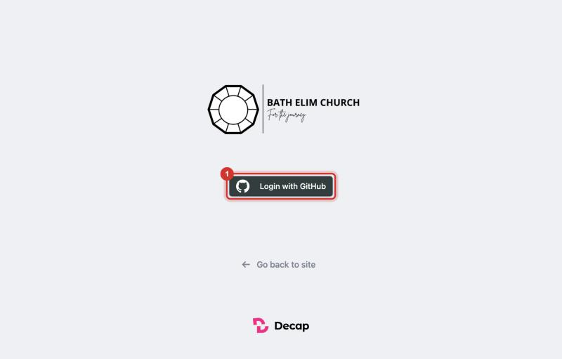
The sign-in screen.
!
Seeing “Your GitHub account does not have access to this repo”? Your account hasn’t been added to the team yet. Ask the website administrator to add you, then accept the invitation email from GitHub and try again.
2Finding your way around
After signing in you land on the Pages screen: a list of every page on the website.
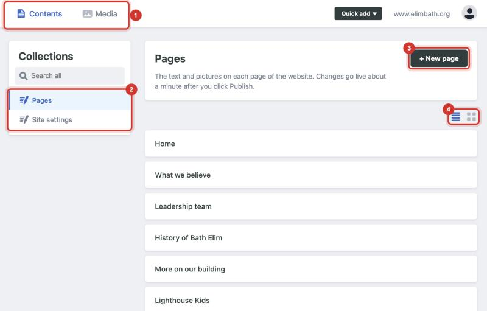
1
Contents is where you are now. Media shows every photo and file on the website.
2
Pages lists the website’s pages. Site settings holds the menu and the footer.
Switch between a plain list and cards with a small picture of each page.
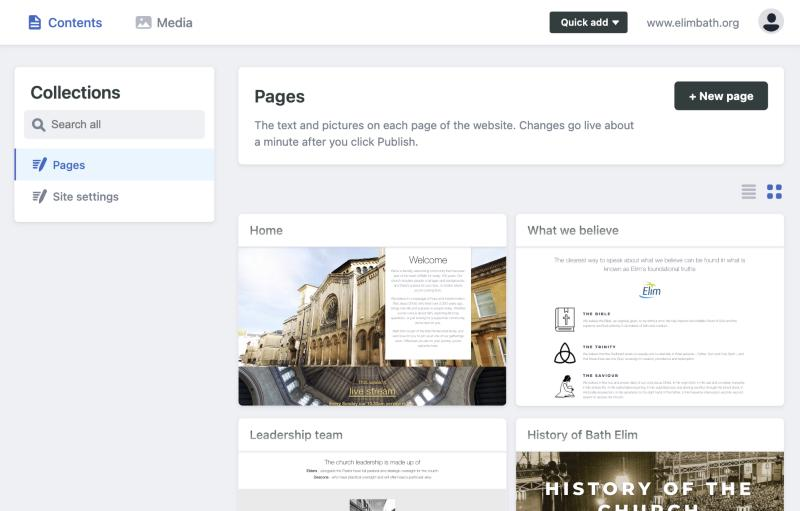
Card view shows a small picture of each page, so they’re easy to recognise.
Further down the same screen, under New pages, are the pages that editors have created themselves (see step 9). To find anything quickly, type in Search all at the top left.
3Changing a page
Click any page to open it. The page is split in two: the boxes you fill in on the left, and a live preview of the page on the right.
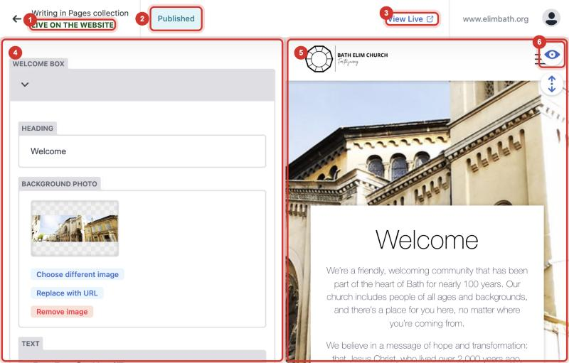
1
Whether the website shows what’s on your screen: Live on the website or Not published yet. The arrow just left of it takes you back to the list of pages.
2
The Publish button. It says Published and is greyed out when there’s nothing new to publish.
3
View Live opens this page on the real website in a new tab.
4
The boxes for everything on the page. Click into any box and type. Each box is labelled, and many have a short tip underneath.
5
The preview. It changes as you type, so you can see exactly how the page will look.
6
The eye hides or shows the preview. The arrows under it keep the preview scrolled to the part you’re editing.
i
Grey bars with a > or ⌄ on the left are groups of boxes, such as “Welcome box” or “Live stream”. Click the bar to open or close the group.
4Publishing your changes
Nothing you type reaches the website, or is kept anywhere, until you publish it.
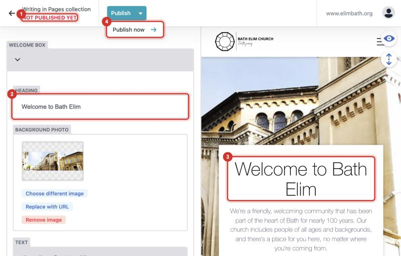
1
As soon as you change something, the status turns to Not published yet.
2
Here the Welcome heading was changed…
3
…and the preview already shows the new heading.
4
When you’re happy, click Publish, then Publish now.
The status changes to Live on the website. The website takes one to two minutes to update; then refresh the page in your browser (or click View Live) to see it.
Leaving without publishing
If you try to leave a page with changes you haven’t published, you’ll be asked first. Click Stay to go back and publish, or Leave to throw the changes away.
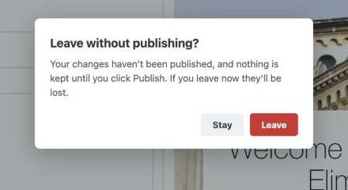
5Writing and formatting text
Larger text boxes have a toolbar, a bit like a word processor.
Leave this on Rich Text. “Markdown” shows the text with formatting codes, which is only useful for experts.
i
Press Enter for a new paragraph. Pasting from Word or an email usually works, but check the preview: removing odd formatting is easiest by pasting with Ctrl/⌘ + Shift + V (paste as plain text).
6Lists of things
Some parts of the website are lists: the notices and posters on the home page, the leadership team, the timeline, the videos on Watch again, the rooms for hire, and so on. They all work the same way.
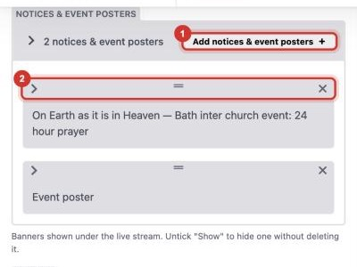
1
Add a new item to the list. It appears at the bottom, with empty boxes to fill in.
2
Each item has a bar along the top:
> opens or closes the item,
= is a handle: drag it up or down to change the order,
× removes the item.
The order in the list is the order on the website.
i
Notices have a Show on the website switch. Turn it off to hide a poster without deleting it, for example to use it again next year.
7Photos and pictures
Every photo box has the same buttons.
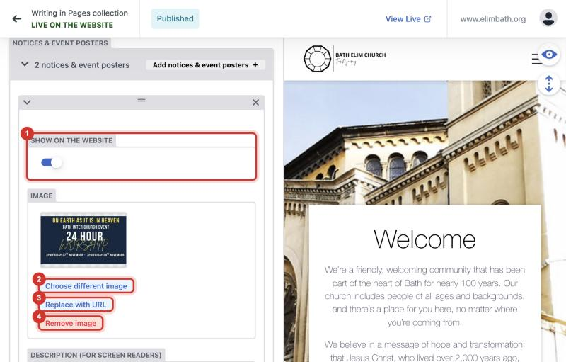
1
Show on the website (notices only), as above.
2
Choose different image opens the picture library, where you can also upload a new one.
3
Replace with URL uses a picture from another website. You’ll rarely need this.
4
Remove image takes the photo off this part of the page (it stays in the library).
Some photo boxes have a Description box next to them. Describe the picture in a few words (for example “Children singing at the nativity”): it’s read aloud to blind visitors and helps Google.
The picture library
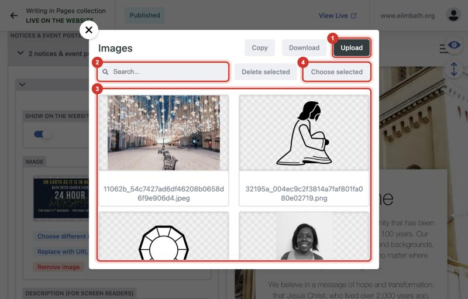
1
Upload a photo from your computer or phone. It’s added to the library and selected.
2
Search the library by file name.
3
Click a picture to select it…
4
…then click Choose selected. The picture appears in the box and in the preview.
i
Photo tips: use JPG photos, ideally under 1 MB (most phones let you share a “medium” or “large” size). Huge photos make the website slow. Wide (landscape) photos work best for banners and top photos. Only use photos the church has permission to use. The Media link at the top of the editor shows the same library, where you can also delete pictures nobody uses any more.
Photos inside the page text
On pages you’ve created, you can put a photo between paragraphs: click where it should go, then click + in the toolbar and choose Image.
PDF files
Files such as the safeguarding policy work the same way: Choose different file opens the library, where you upload the new PDF and choose it.
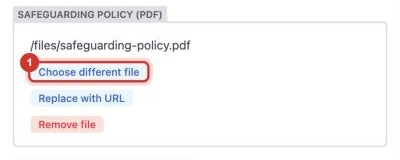
8Links
Link boxes (on the menu, buttons and notices) suggest the website’s pages as you type, so you don’t need to know any page addresses.
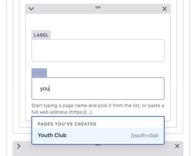
Click into the link box and start typing the page’s name, for example you for “Youth Club”.
Click the page in the list (or use the arrow keys and Enter).
Underneath, Links to: Youth Club confirms it worked.
To link to another website (YouTube, Facebook, a booking form…), paste its full address starting with https://. It will open in a new tab.
If you see an orange warning, there’s no page at that address: pick one from the list instead.
In the middle of text, select the words and click the 🔗 Link button in the toolbar, then type or paste the address (for a page on this website, just its ending, such as /give).
9Creating a new page
Click + New page on the Pages screen. The new page opens already filled in with example text and a photo, so you can see how it will look and just replace things.
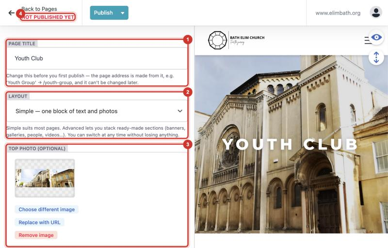
1
Page title. Replace “Test Page” with the real name before you publish: the page’s address is made from it, so “Youth Club” becomes www.elimbath.org/youth-club. The address can’t be changed later.
2
Layout.Simple (one block of text and photos) suits most pages. Advanced builds the page from ready-made sections (see step 10). You can switch at any time without losing anything.
3
Top photo. Shows the title in big letters over a photo. Click Remove image for a plain heading instead.
4
A new page is Not published yet until you publish it.
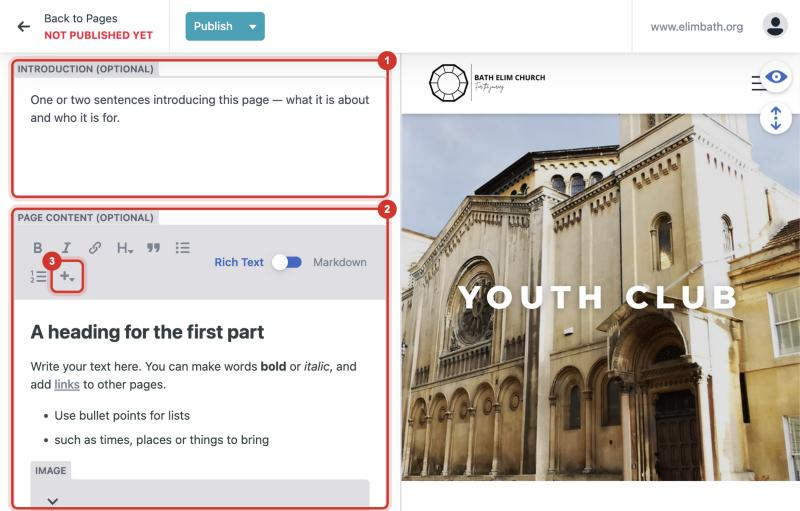
1
Introduction: one or two sentences under the title, saying what the page is about.
2
Page content: the main text. Replace the example headings and text with your own, and delete anything you don’t need.
3
+ adds a photo in the middle of the text.
Publishing the new page
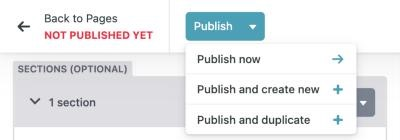
Click Publish and choose:
Publish now: the usual choice. Publish and create new: publish, then start another new page. Publish and duplicate: publish, then start a copy of this page.
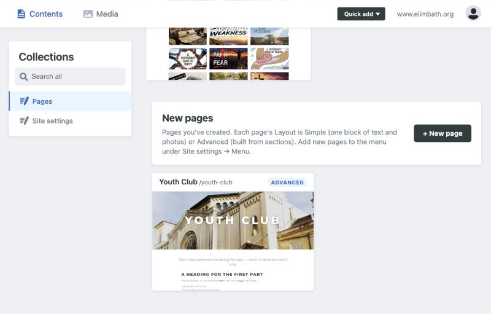
Your page now appears under New pages on the Pages screen, with its address.
!
A new page isn’t in the menu until you add it there, so visitors won’t find it. See The menu.
10Building a page from sections
With the Advanced layout, a page is an opening text followed by any number of ready-made sections, stacked one under another.
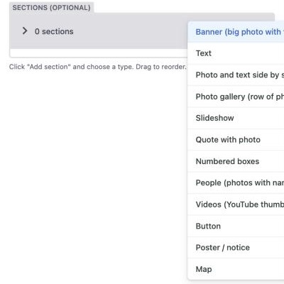
Click Add section and choose a type:
Banner
A big photo with a title
Text
A heading and paragraphs
Photo and text
Side by side, with an optional button
Photo gallery
A row of photos
Slideshow
Photos that change by themselves
Quote with photo
Something someone said
Numbered boxes
“Three ways to get involved”
People
Photos with names and roles
Videos
YouTube thumbnails
Button
A single call to action
Poster / notice
An event poster
Map
A Google map of an address
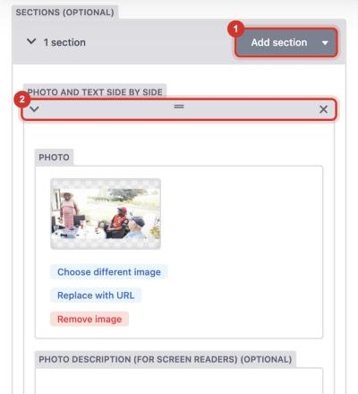
1
Add as many sections as you like.
2
Each section has the same bar as list items: > open or close, = drag to reorder, × remove.
New sections arrive filled in with example text and church photos. Replace what you need; most boxes are optional, and anything left empty is simply left out.
Many sections have a Background choice (white, light grey, dark slate or navy) to separate them from the one above.
11The menu
The menu at the top of every page is edited in Site settings, together with the footer.
× removes an item from the menu (the page itself isn’t deleted).
4
The preview shows the menu as it will look.
Items and drop-downs
Click > on an item to open it.
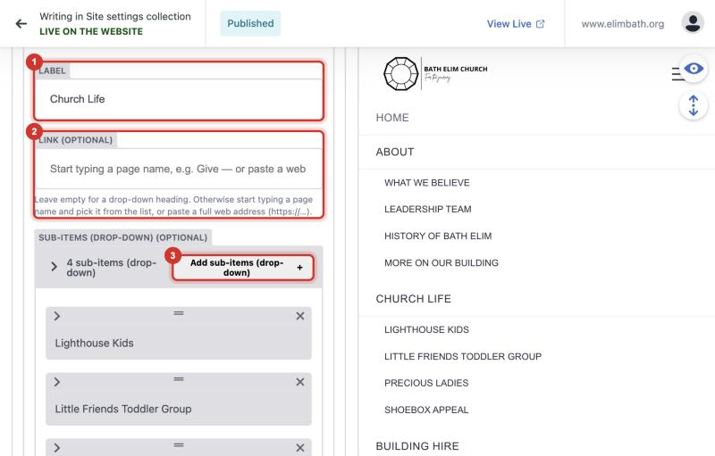
1
Label: the words shown in the menu.
2
Link: the page it opens. Leave it empty to make the item a drop-down heading, like “Church Life”.
3
Add sub-items adds a link to the item’s drop-down.
Adding a page to the menu
Open the item whose drop-down it belongs in (or click Add menu items for a new top-level item).
Click Add sub-items.
In the new item’s Link box, start typing the page’s name and pick it from the list (see Links). If the Label is empty, it fills in with the page’s name.
Check the preview, then Publish → Publish now.
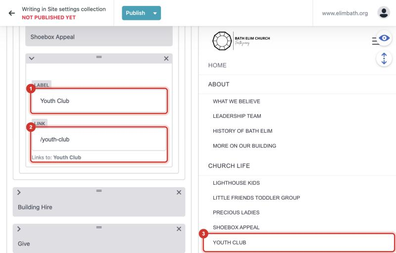
1
The label filled in by itself.
2
The link, confirmed underneath: Links to: Youth Club.
3
The new item in the preview of the drop-down.
12Footer and contact details
Site settings → Footer & contact details holds the information at the bottom of every page. The preview shows the footer as you type.
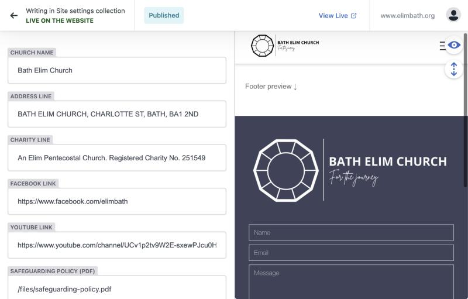
Box
What it’s for
Church name, Address line, Charity line
The text at the bottom of every page
Facebook link, YouTube link
The social media buttons (full addresses starting with https://)
Safeguarding policy (PDF)
The PDF behind the “Safeguarding Policy” button (see PDF files)
Safeguarding commitment link
Elim’s national safeguarding page
Default page description (for Google)
The short description Google shows under the church’s name in search results
13Deleting a page
Only pages you’ve created can be deleted; the main pages can only be changed.
Open the page and click Delete entry at the top.
Check the name in the message, then click Delete page. The page disappears from the website within a minute or two.
If the page was in the menu, remove it there too (Site settings → Menu, then × on the item, then Publish), or visitors will reach a “page not found” message.
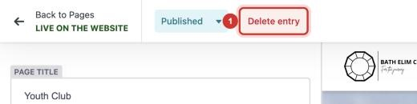
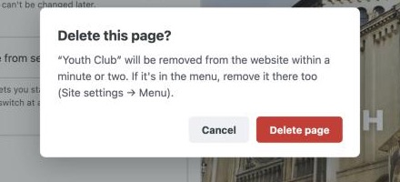
14Tips and problems
If…
Try this
I published but the website hasn’t changed
Wait two minutes, then refresh the page. On a phone, close the page and open it again.
I made a mistake and published it
Change it back and publish again. For anything bigger, such as a deleted page, ask the website administrator: every past version is kept.
I left the page and lost my changes
Changes are only kept once published. If your browser closed by accident, open the page again: the editor may offer to bring back the changes you hadn’t published.
The preview looks squashed
The preview is narrower than a computer screen, so it may show the mobile layout. Click View Live after publishing to check the real page.
“Your GitHub account does not have access”
Ask the website administrator to add you to the team, then accept GitHub’s invitation email.
Two people editing at once
Avoid editing the same page at the same time: the last person to publish wins.
Signing out
Click the round picture at the top right of the editor and choose Log out. Always sign out on a shared computer.